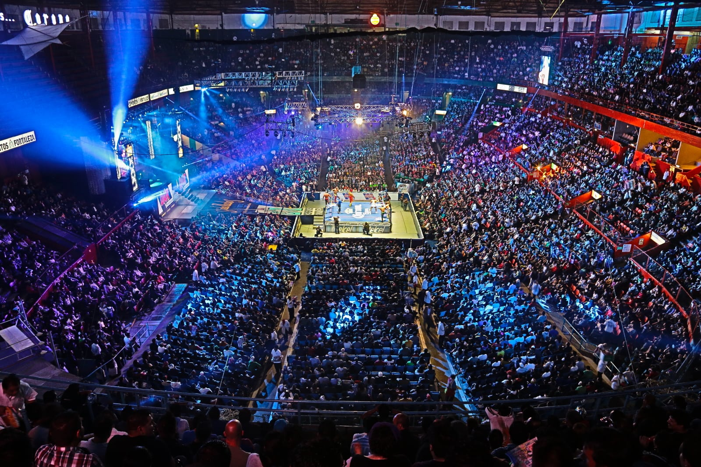
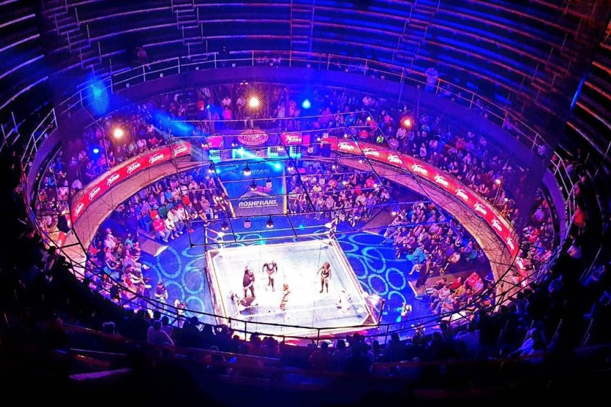

La bien llamada “Catedral de la Lucha Libre” es el más importante escenario de Lucha Libre a nivel mundial. Todos los reflectores apuntan a este magno escenario, el cual es la casa principal del Consejo Mundial de Lucha Libre y donde se han llevado a cabo las más importantes batallas de lucha libre de la historia. En su ring, muchos luchadores estrellas se han convertido en leyendas.
También ha sido un importante escenario para el boxeo, ahí muchos de los más grandes peleadores de México tuvieron momentos de gloria y esta majestuosa Arena también se convirtió en sede para las competencias de boxeo de los Juegos Olímpicos de 1968 siendo renombrada ‘Arena 68’ y donde México consiguió dos medallas de oro y dos de bronce.
Miles de fans han visto a sus artistas o grupos favoritos en la Arena México. Así, en este magnífico recinto se ha presentado grandes de la música como Juan Gabriel, Luis Miguel, Calle 13, entre otros.
El Circo y el Holiday On Ice han tenido grandes temporadas de invierno o verano y llenaron de emociones y alegría a generaciones enteras y se convirtieron en toda una tradición para la vida cotidiana de la Ciudad de México.
De esta manera, La Arena México se ha convertido en un importantísimo polo de entretenimiento y un referente de la oferta cultural, deportiva y artística de la Ciudad de México.
Arena Coliseo
Enclavada en el corazón del Centro Histórico de la Ciudad de México, “El Embudo de Perú 77” es la arena de lucha libre más antigua del mundo, la cual fue la cuna de la época de oro de la lucha libre mexicana. En este importantísimo local se llevó a cabo la mas recordada de las batallas de la primera mitad de la historia de este emblemático deporte, el duelo de Máscara contra Máscara entre El Santo y Black Shadow, que ocurrió el 7 de octubre de 1952.
Actualmente, los sábados a las 7:30 de la noche, los aficionados de este deporte se dan cita en este histórico recinto para disfrutar de la función de Sábados de Lucha Retro de la Arena Coliseo donde disfrutan de la lucha libre con un sabor muy especial.